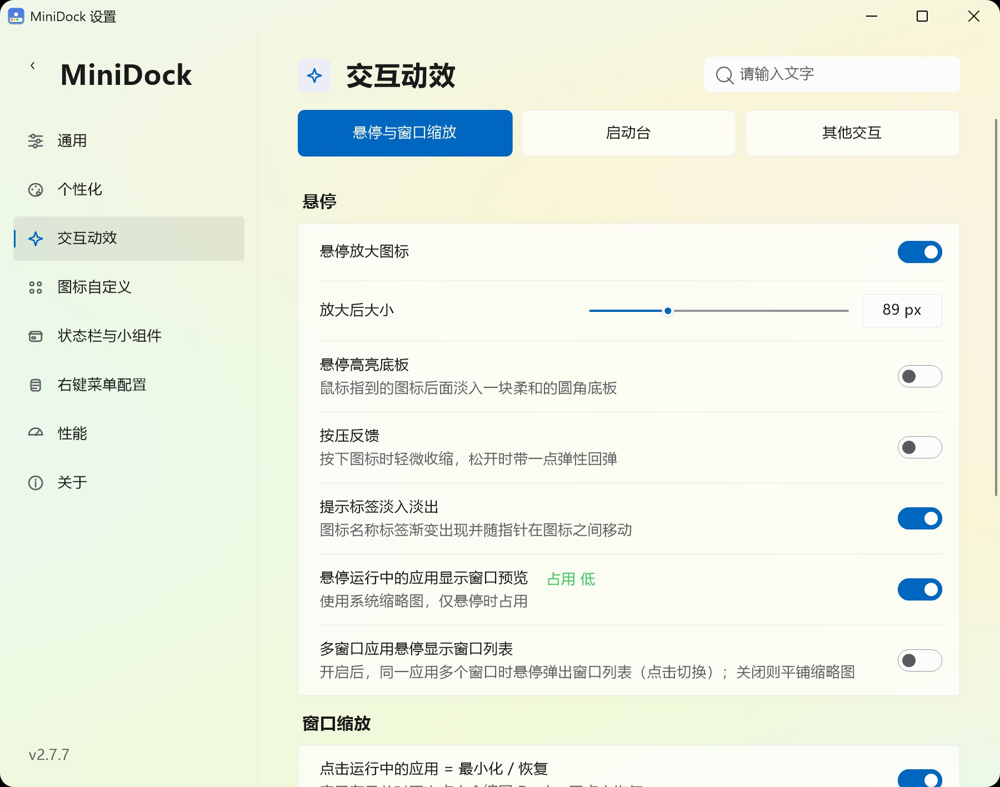
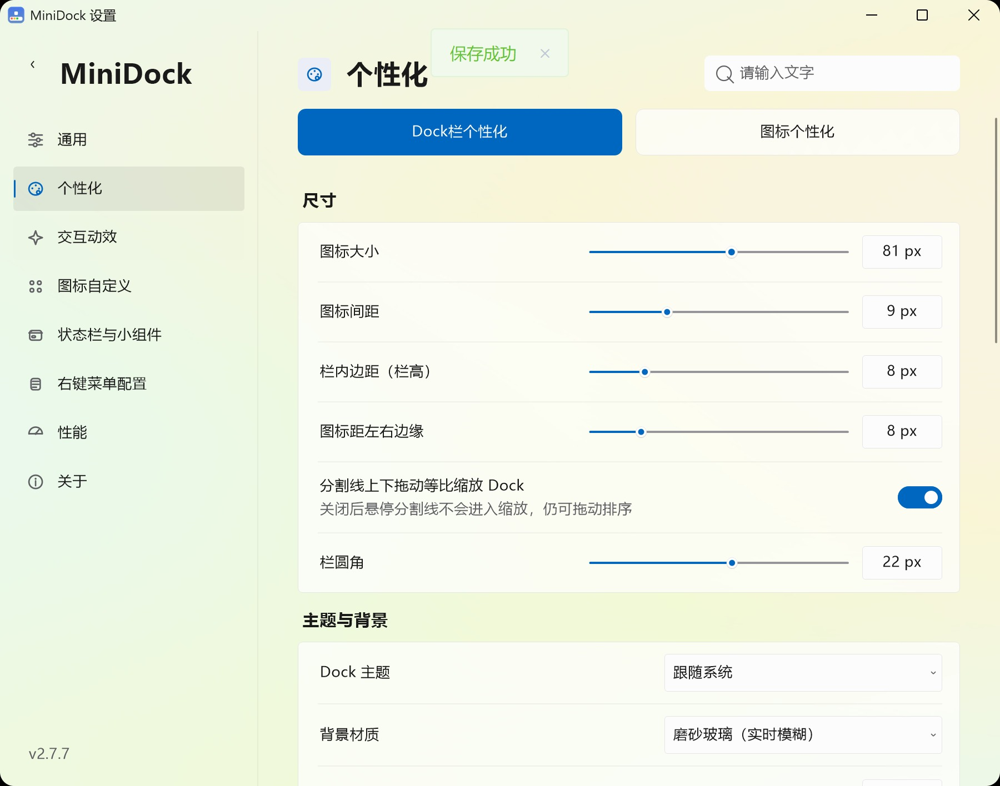
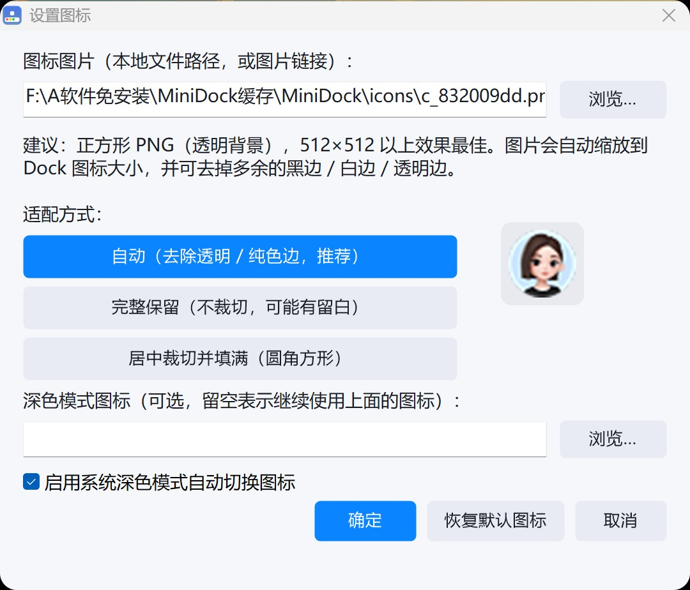
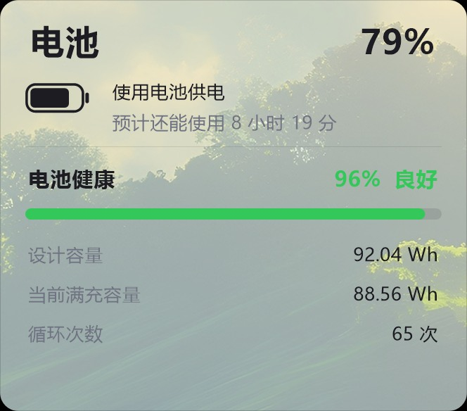
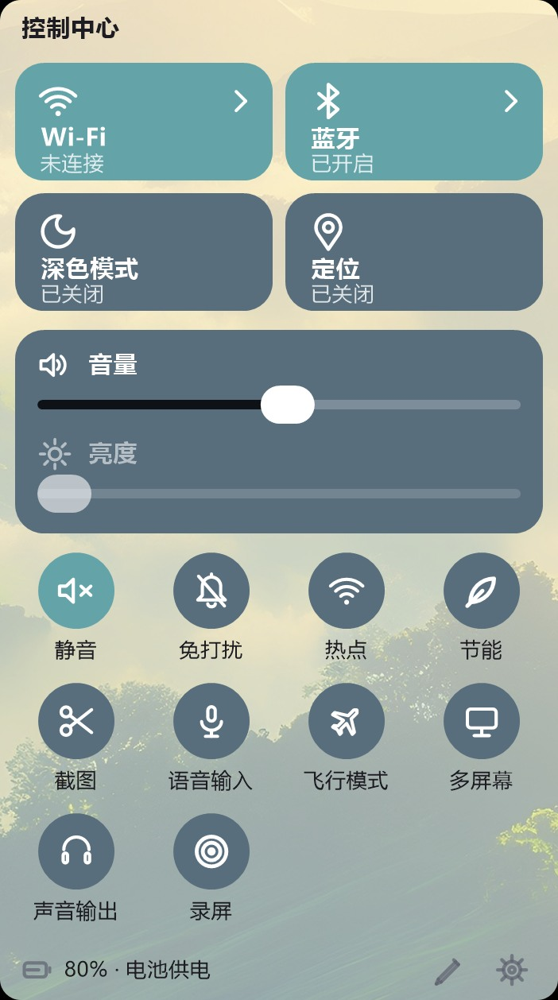
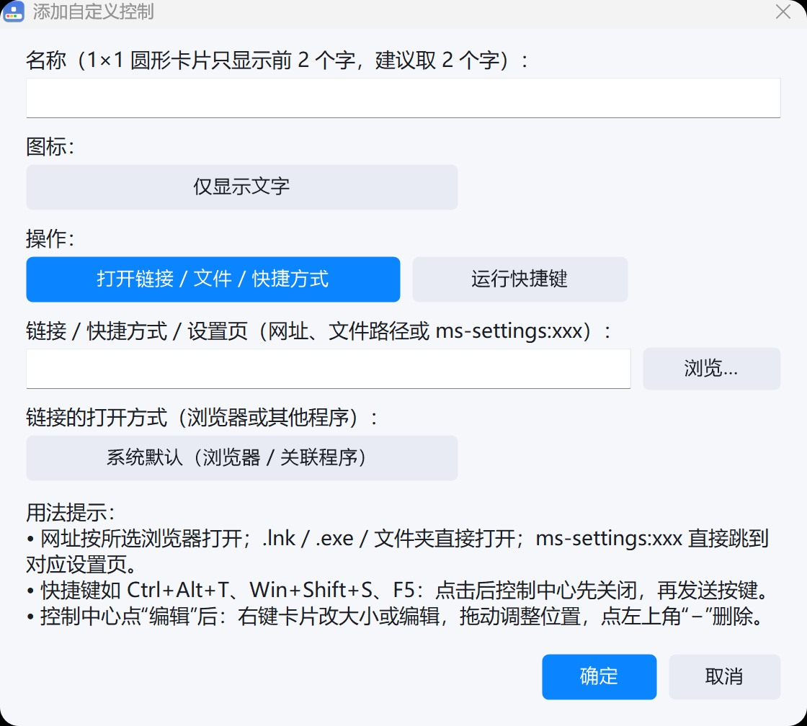
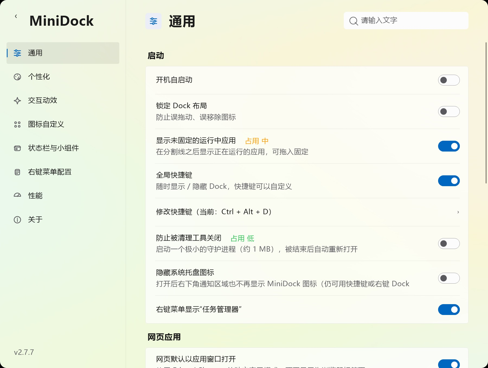
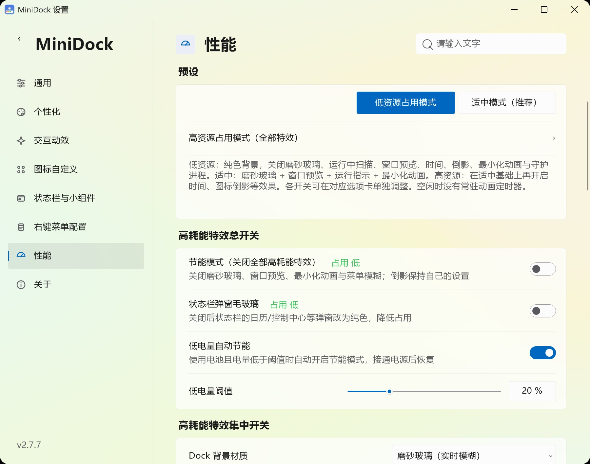
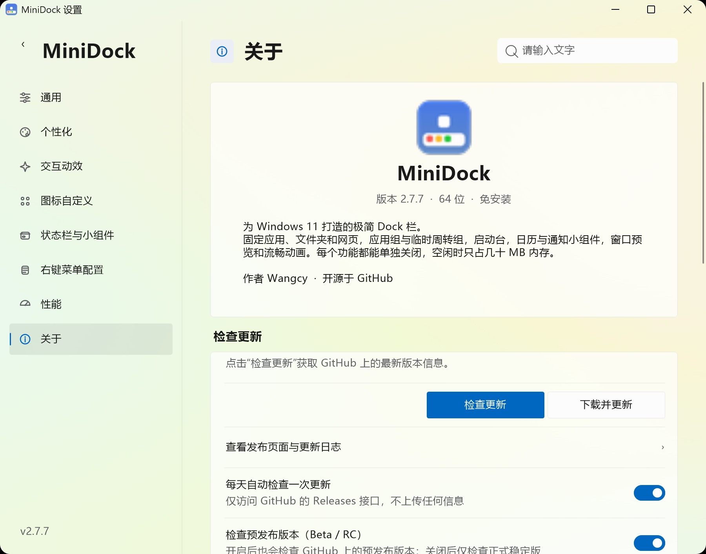

MiniDock 使用文档
按设置选项卡组织，覆盖全部常用功能。适用于 2.8.0。
MiniDock 是什么
MiniDock 是纯 C / Win32 / GDI+ 手写的 Windows 桌面工具，把 macOS 风格的 Dock、顶部状态栏、控制中心与小组件放在同一个进程里。
- 单文件：一个 exe，无 .NET / Electron / VC++ 依赖。
- 便携：配置
MiniDock.ini与图标缓存都在程序目录。 - 可定制：外观、动画、图标、控制中心、右键菜单均可调整。
- 开源：MIT 协议，可自行编译。
安装与启动
- 下载压缩包并解压到任意文件夹。
- 双击
MiniDock-2.8.0.exe。 - 首次运行生成
MiniDock.ini与icons\。 - 如需开机自启：设置 → 通用 → 开机自启动。
更新与版本
覆盖 exe 即可保留配置。升级前建议在「配置与备份」导出一次。
| 版本 | 内容 |
|---|---|
| 2.8.0 | 交互与设置完善、控制中心与图标改进、稳定性与资源占用优化 |
| 2.7.7 | 控制中心崩溃修复、Wi‑Fi / 蓝牙二级菜单、录屏入口、体积精简 |
Dock 基础操作
添加与打开
- 右键 Dock →「添加应用 / 文件」「添加文件夹」「添加网页应用」。
- 左键启动；已运行应用再次点击在显示 / 最小化间切换。
- 把文件拖到图标上，用该应用打开。
排序与移除
- 按住图标拖动调整顺序，拖出 Dock 松手移除。
- 右键 →「从 Dock 移除」，不会删除源文件。
- 右键 →「在右侧添加分割线」，分组更清楚。
外观
- 设置 → 个性化：背景模式、颜色、圆角、内边距、不透明度。
- 不透明度 0 时背景隐藏，只剩图标，仍可点击。
交互与动画
| 选项 | 说明 |
|---|---|
| 悬停放大 | 按距离平滑放大，可调强度与半径 |
| 悬停高光 | 图标下方的柔和高光 |
| 点击回弹 | 按下压缩、松开回弹 |
| 动画风格 | 压缩飞入 / 快照神奇 |
| 动画速度 | 低配机器可调快 |
| 显示模式 | 常驻 / 自动隐藏 / 智能隐藏 |

应用组 特色
- 把一个图标拖到另一个图标上，松手组成应用组。
- 点击组打开成员；组内继续拖动排序，拖出成员移出。
- 右键组可重命名、解散；可切换宽图标显示。
- 「临时周转组」重启后自动清空。
启动台 特色
启动台是 Dock 上的宫格图标，点击后展示全部应用。
- 搜索框筛选应用，回车打开第一个结果。
- 搜索框可切换搜索引擎（Google / Bing / DuckDuckGo / 百度 / 搜狗 / 360）。
- 分类标签「全部 / 测试 / 系统 / 工具」与分页点。
- 设置中可调整布局、每行数量与启动台热键。

网页应用 特色
- 右键 →「添加网页应用」，填写网址与名称。
- 右键 →「以应用窗口打开」，使用独立窗口。
- 右键 →「选择打开的浏览器…」指定 Edge / Chrome / Firefox 或任意 exe。
选择只作用于当前网页应用，不影响全局默认浏览器。
个性化与背景
| 选项 | 说明 |
|---|---|
| 背景模式 | 纯色 / 渐变 / 磨砂（毛玻璃） |
| 主色 / 副色 | 渐变起止色，可跟随系统强调色 |
| 圆角 / 内边距 | Dock 形状与图标留白 |
| 不透明度 | 0 = 透明但可点击；100 = 不透明 |

设置图标 特色
右键任意图标 →「设置图标…」。
| 选项 | 说明 |
|---|---|
| 本地图片 | PNG / JPG / ICO / BMP / GIF |
| 图片链接 | http(s) 链接，确定时同步下载并缓存 |
| 适配方式 | 自动去透明边 / 完整保留 / 居中裁切 |
| 深色图标 | 单独指定，可跟随系统深浅色 |

批量设置图标
设置 → 图标自定义 → 从文件夹批量设置图标：选择文件夹，按应用名匹配，预览后应用；未匹配项会列出。
深色图标 特色
- 为单个应用指定深色图标。
- 按名称批量匹配深色图标。
- 开启自动切换后，系统深浅色变化时自动换图。
系统图标
设置 → 图标自定义 → 系统图标，可直接添加开始菜单、设置、资源管理器、回收站、控制面板、任务管理器等。
状态栏
状态栏与 Dock 同属一个进程，可在 设置 → 状态栏与小组件 中逐项开关。
| 元素 | 说明 |
|---|---|
| 时间日期 | 格式可自定义，点击打开日历 |
| 资源监视 | CPU / 内存，点击查看详情 |
| 控制中心 | 打开控制中心 |
| 通知 | 需要关注的应用 |
| 托盘 / 电量 / 输入法 | 系统状态入口 |
小组件
| 小组件 | 功能 |
|---|---|
| 时间与日期 | 时钟、日历、农历 |
| 通知 | 汇总需要关注的应用 |
| 资源监视器 | CPU、内存、磁盘、网络、温度 |
| 计时器 / 待办 | 番茄钟与简单待办 |
| 电池健康 | 设计容量、当前容量、循环次数 |
| 温度 | CPU / 硬盘温度（视设备支持） |

控制中心 特色
| 卡片 | 左半点击 | 右侧箭头 |
|---|---|---|
| Wi‑Fi | 打开系统 Wi‑Fi 设置 | 可用网络列表 |
| 蓝牙 | 打开系统蓝牙设置 | 已配对设备列表 |
| 深色模式 | 切换系统深浅色 | — |
| 定位 | 打开定位隐私设置 | — |
音量绑默认输出设备；亮度优先 DDC/CI，内屏不支持时自动软件调光。
快捷开关：静音、免打扰、热点、触控板、截图、语音输入、飞行模式、多屏幕、录屏、录音、节能模式、系统设置。

控制中心自定义
- 打开控制中心，点击编辑按钮。
- 拖动卡片排序；「+」添加控制项。
- 右键卡片设置 1×1 / 1×2 / 1×4 宽度。
- 再次点击编辑退出。

电池与温度
电池健康读取设计容量、满充容量与循环次数；温度读取 CPU / 硬盘传感器，部分设备或虚拟机不支持。
设置总览
| 分类 | 包含 |
|---|---|
| 通用 | 开机自启、锁定位置、热键、更新、日志 |
| 个性化 | 背景与渐变、图标个性化、倒影 |
| 位置与显示 | 屏幕边缘、显示器、显示模式 |
| 交互动效 | 放大、回弹、动画风格、自动隐藏 |
| 状态栏与小组件 | 状态栏元素、小组件开关与布局 |
| 图标自定义 | 批量图标、系统图标、深色图标、网页打开方式 |
| 性能 | 低占用模式、帧率、缓存清理 |
| 右键菜单配置 | 逐项显示 / 隐藏 |
| 配置与备份 | 导出、导入、打开目录、重置 |
| 关于 | 版本、仓库、检查更新 |

通用
- 开机自启动、锁定 Dock 位置、隐藏系统托盘图标。
- 全局快捷键，默认 Ctrl + Alt + D。
- 启动时检查更新；日志默认关闭。
位置与显示
- 屏幕边缘：上 / 下 / 左 / 右。
- 多屏时指定 Dock 所在显示器。
- 显示模式：常驻 / 自动隐藏 / 智能隐藏。
- 边缘间距、图标大小与间距。
性能
| 选项 | 说明 |
|---|---|
| 低占用模式 | 降低刷新率与动画帧率 |
| 动画帧率 | 30 / 60 / 高刷 |
| 空闲内存回收 | 无操作后归还工作集 |
| 清理图标缓存 | 删除 icons 中下载的图标 |

配置与备份
- 导出 / 导入配置；打开配置目录；恢复默认（会先备份）。
- 便携使用：整个文件夹复制到 U 盘即可。
关于
查看版本、编译时间、仓库地址；检查更新与打开 GitHub Releases。

快捷键
| 功能 | 默认 |
|---|---|
| 召唤 / 隐藏 Dock | Ctrl + Alt + D |
| 启动台 | Ctrl + Alt + Space |
| 系统截图 | Win + Shift + S |
| 系统录屏 | Win + Shift + R |
多显示器
- Dock 与状态栏可分别指定显示器。
- 显示器热插拔后自动回到主屏。
- 便携模式不写注册表（开机自启除外）。
拖拽与排列
- 按住图标拖动排序；拖出 Dock 松手移除。
- 把文件拖到图标上，用该应用打开。
- 把图标拖到另一个图标上组成应用组；组内拖出可移出。
- 拖到「废纸篓」可删除文件（需在设置中启用）。
高 DPI 与 2 倍图标
Windows 缩放 125% / 150% / 200% 时，MiniDock 会按 DPI 自动缩放 Dock、图标与文字。
- 图标建议提供 2 倍尺寸（如显示 64px 时使用 128px 图片），在高分屏更清晰。
- 「设置图标」支持任意尺寸 PNG，程序会按适配方式缩放；建议正方形、透明背景。
- 多显示器缩放不同时，Dock 会跟随所在显示器的 DPI。
设置项速查
| 页面 / 选项 | 说明 |
|---|---|
| 通用 · 开机自启 | 写入当前用户启动项；移动文件夹后需重新开启 |
| 通用 · 锁定位置 | 防止拖动改变 Dock 所在边缘 |
| 通用 · 全局热键 | 召唤 / 隐藏 Dock，可改为不冲突的组合 |
| 个性化 · 背景模式 | 纯色 / 渐变 / 磨砂；磨砂依赖 DWM |
| 个性化 · 圆角 / 内边距 | 控制 Dock 外形与图标留白 |
| 个性化 · 不透明度 | 0 为隐形但仍可点击，100 为不透明 |
| 图标个性化 · 圆角 / 间距 | 统一图标形状与排列密度 |
| 倒影 · 高度 / 透明度 | Dock 下方倒影，关掉可减少高度 |
| 位置 · 屏幕边缘 | 上 / 下 / 左 / 右，竖屏自动调整 |
| 位置 · 显示器 | 多屏时指定 Dock 所在屏幕 |
| 显示模式 | 常驻 / 自动隐藏 / 智能隐藏 |
| 交互动效 · 放大半径 | 指针周围多少像素内的图标参与放大 |
| 交互动效 · 放大强度 | 最大放大到基准尺寸的多少倍 |
| 交互动效 · 回弹幅度 | 按下压缩与松开回弹的力度 |
| 交互动效 · 动画速度 | 整体动画时长，低配可调快 |
| 弧形展开 · 样式 | 扇形 / 网格 / 列表；限制最大数量 |
| 应用组 · 宽图标 | 组图标显示成员缩略图，可调列数 |
| 启动台 · 布局 | 大 / 小、每行数量、分页 |
| 启动台 · 引擎 | 勾选启用的搜索引擎与默认浏览器 |
| 启动台 · 热键 | 默认 Ctrl+Alt+Space |
| 状态栏 · 高度 / 间距 | 顶部条高度与距屏幕边缘的距离 |
| 状态栏 · 悬浮 / 全屏隐藏 | 是否留出安全区、游戏时自动隐藏 |
| 小组件 · 开关 | 每个小组件独立开启，关闭后不绘制 |
| 控制中心 · 编辑 | 拖动排序、+ 添加、右键设宽度 |
| 控制中心 · 快捷开关 | 录屏 / 录音 / 节能 / 多屏等可增删 |
| 图标 · 适配方式 | 自动去边 / 完整保留 / 居中裁切 |
| 图标 · 深色模式 | 单独图片；可跟随系统深浅色切换 |
| 网页应用 · 浏览器 | 默认 / Edge / Chrome / Firefox / 自定义 exe |
| 性能 · 低占用模式 | 降低刷新率与动画帧率 |
| 性能 · 空闲回收 | 无操作后归还工作集，降低内存 |
| 右键菜单 · 逐项开关 | 隐藏不用的菜单项，减少误操作 |
| 配置与备份 · 导出 / 导入 | ini 与图标设置；重置前自动备份 |
常见问题
微信 / QQ 点击后窗口不能操作？
托盘应用必须由它自己的托盘图标唤醒。MiniDock 会优先点击托盘图标；未登录时直接打开登录页。
设置图标后没生效？
网络图片需可直接访问；本地建议正方形 PNG 512×512 以上；深色模式检查深色图标。
温度显示不可用？
部分设备不暴露温度传感器（虚拟机、部分台式机）。
不透明度 0 时点不到？
2.7.7 起已修复，透明状态仍保留可点击底板。